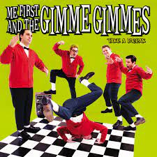

Favoriete tv-series


| Naam | Foto | Site |
|---|---|---|
| Me First and the Gimme Gimmes |  | Me First and the Gimme Gimmes |
| Future Suck | Future Suck |
| Naam | Foto | Site |
|---|---|---|
| Lilo & Stitch | |
Lilo & Stitch |
| Rick and Morty | |
Rick and Morty |
| Naam | Foto | Site |
|---|---|---|
| Saving Private Ryan | Saving Private Ryan | |
| Harry Potter | Harry Potter |